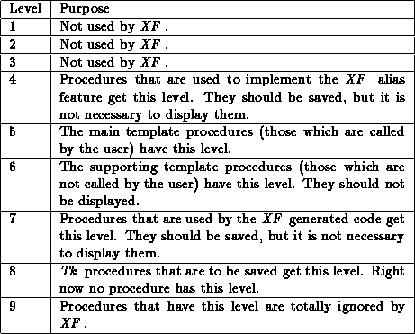

To make the handling of bindings and procedures easy to survey, they can be assigned to a level. This means that the first line of the Tcl/Tk command that is bound to an event or a procedure name begins with the comment ``# xf ignore me <level>''. Such a binding or procedure is handled differently than other bindings and procedures. They can be hidden in the XF dialogs, and they can be ignored when the source is saved.
The user can assign 9 levels to bindings and procedures. Each level can be turned on and off separately (both for displaying and saving). Some levels are used by XF already, but the remaining levels can be used to categorize procedures and event bindings. For event bindings, only the level 9 is used by XF . This level means that the bindings are totally ignored. The following table shows the usage of the levels for procedures.
